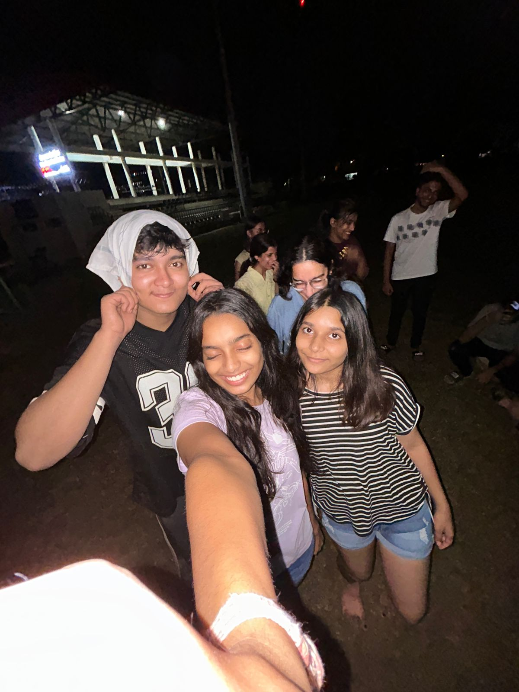

Hi, I'm Jhanvi Agarwal
Fresher at IIT Roorkee from Jaipur
About Me
B.Tech in Electrical Engineering student at IIT Roorkee. I love to dance, draw and play every sport. Always eager to learn and explore new opportunities!
Let's Connect
Resume
My academic journey and skills
Education
B.Tech Electrical Engineering
IIT Roorkee (2025-2029)
Currently Pursuing12th Standard
Modern School, Jaipur
Achievements
Technical Skills
Soft Skills
Life at IIT Roorkee
A journey through R-land from a fresher's perspective
Festival Highlights
Colors, Chaos, & Camaraderie! Campus festivals are where the real fun happens. From quirky decorations to endless dancing, every moment bursts with energy and enthusiasm. These festivals are all about making memories and getting to know each other.
Hostel Diaries
The best part of campus life! Late-night Maggi talks, last-minute exam prep, and bonds that became family. These walls have witnessed our dreams, tears, and unforgettable memories that make every day worth remembering.
Festival Highlights
Garba Night
Garba night was full of rhythm, colors, and energy!We twirled to the beats, wore vibrant traditional outfits, and enjoyed every moment of dancing with friends.
The lights, music, and festive vibes made the evening unforgettable.
Celebrating together turned every step into laughter and every twirl into memories we’ll always cherish.
Ganesh Chaturthi
Ganesh Chaturthi was a blast this year!We decorated the place with lights and flowers, made some delicious modaks,
and enjoyed every bit of the festivities together.
From singing bhajans to playing fun games, it was a day full of laughter, joy, and memories that we’ll cherish forever.
Celebrating with friends made the festival even more special, turning every moment into a mini adventure of colors, sweets, and smiles.

Janmashtami
Janmashtami was full of fun and excitement!We dressed up, and even tried our hands at the Dahi Handi tradition.
With friends around, the day was filled with laughter, sweets, and playful competitions.
From decorating the venue to enjoying the festive vibes together, it was a joyful celebration that made the birth of Lord Krishna even more special.
Blogs
The beginning of a new chapter in Roorkee
The first days at IITR as a fresher felt like stepping into a whole new world.From exploring the huge campus to making friends from every corner of the country,everything seemed exciting and new.
Late-night walks, canteen hangouts, and endless hostel chatter became the highlights of those days.
It felt like the long struggle of JEE had finally paid off a dream turning into reality,
where every moment carried the thrill of freedom and new beginnings.
Deadlines

*Deadlines*
Thinking about shifting from the hectic schedule of JEE preparation to the life of IITRwas truly contrasting as contrasting as burning the midnight oil for exams and then suddenly
racing to submit assignments on time. Life here revolves around deadlines, whether it’s projects, reports, or presentations.
They come unannounced, pile up quickly, and teach us the art of last-minute hustle. While stressful,
these deadlines are what shape our discipline, time management, and resilience in the long run.
Family and Home
*Family and Home*
Staying away from home reminds us of the warmth and comfort we left behind when we stepped into hostel life.From mom’s homemade food to dad’s advice and the laughter echoing in our rooms,very memory feels more special now.
Living away from home teaches us the true value of those simple moments the love, care, and sense of belonging that no place else can replace.